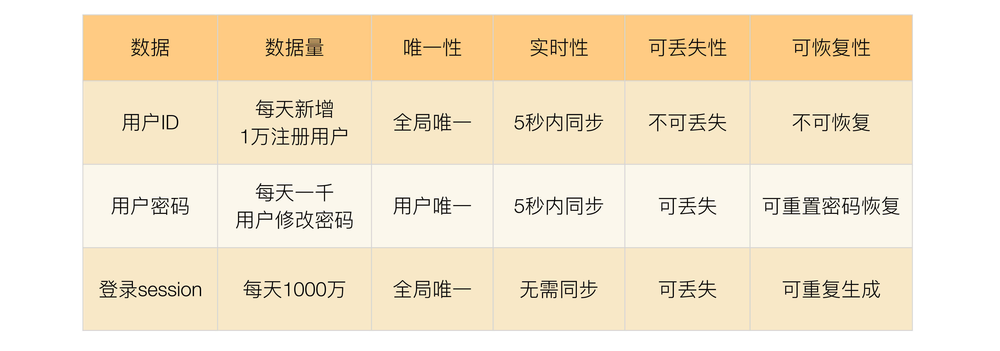
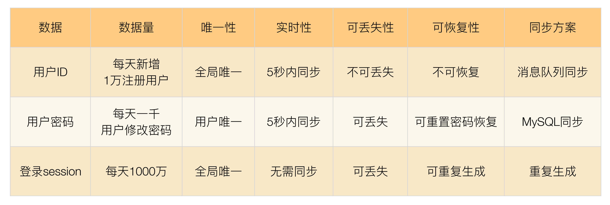
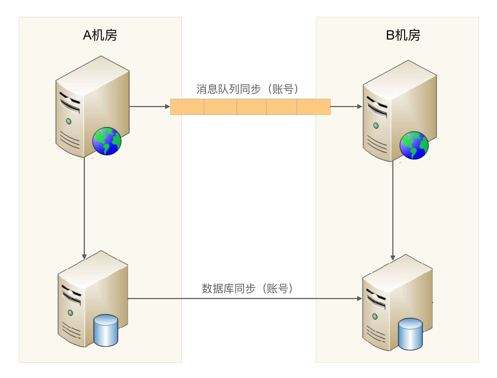
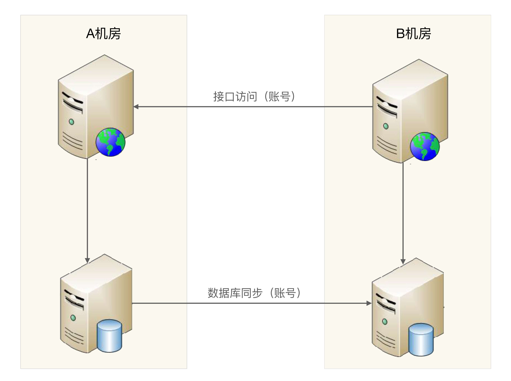

- 00 开篇词 照着做，你也能成为架构师！.md.html
- 01 架构到底是指什么？.md.html
- 02 架构设计的历史背景.md.html
- 03 架构设计的目的.md.html
- 04 复杂度来源：高性能.md.html
- 05 复杂度来源：高可用.md.html
- 06 复杂度来源：可扩展性.md.html
- 07 复杂度来源：低成本、安全、规模.md.html
- 08 架构设计三原则.md.html
- 09 架构设计原则案例.md.html
- 10 架构设计流程：识别复杂度.md.html
- 11 架构设计流程：设计备选方案.md.html
- 12 架构设计流程：评估和选择备选方案.md.html
- 13 架构设计流程：详细方案设计.md.html
- 14 高性能数据库集群：读写分离.md.html
- 15 高性能数据库集群：分库分表.md.html
- 16 高性能NoSQL.md.html
- 17 高性能缓存架构.md.html
- 18 单服务器高性能模式：PPC与TPC.md.html
- 19 单服务器高性能模式：Reactor与Proactor.md.html
- 20 高性能负载均衡：分类及架构.md.html
- 21 高性能负载均衡：算法.md.html
- 22 想成为架构师，你必须知道CAP理论.md.html
- 23 想成为架构师，你必须掌握的CAP细节.md.html
- 24 FMEA方法，排除架构可用性隐患的利器.md.html
- 25 高可用存储架构：双机架构.md.html
- 26 高可用存储架构：集群和分区.md.html
- 27 如何设计计算高可用架构？.md.html
- 28 业务高可用的保障：异地多活架构.md.html
- 29 异地多活设计4大技巧.md.html
- 30 异地多活设计4步走.md.html
- 31 如何应对接口级的故障？.md.html
- 32 可扩展架构的基本思想和模式.md.html
- 33 传统的可扩展架构模式：分层架构和SOA.md.html
- 34 深入理解微服务架构：银弹 or 焦油坑？.md.html
- 35 微服务架构最佳实践 - 方法篇.md.html
- 36 微服务架构最佳实践 - 基础设施篇.md.html
- 37 微内核架构详解.md.html
- 38 架构师应该如何判断技术演进的方向？.md.html
- 39 互联网技术演进的模式.md.html
- 40 互联网架构模板：存储层技术.md.html
- 41 互联网架构模板：开发层和服务层技术.md.html
- 42 互联网架构模板：网络层技术.md.html
- 43 互联网架构模板：用户层和业务层技术.md.html
- 44 互联网架构模板：平台技术.md.html
- 45 架构重构内功心法第一式：有的放矢.md.html
- 46 架构重构内功心法第二式：合纵连横.md.html
- 47 架构重构内功心法第三式：运筹帷幄.md.html
- 48 再谈开源项目：如何选择、使用以及二次开发？.md.html
- 49 谈谈App架构的演进.md.html
- 50 架构实战：架构设计文档模板.md.html
- 51 如何画出优秀的软件系统架构图？.md.html
- 加餐｜业务架构实战营开营了.md.html
- 加餐｜单服务器高性能模式性能对比.md.html
- 加餐｜扒一扒中台皇帝的外衣.md.html
- 如何高效地学习开源项目 华仔，放学别走！ 第3期.md.html
- 新书首发 《从零开始学架构》.md.html
- 架构专栏特别放送 华仔，放学别走！ 第2期.md.html
- 架构专栏特别放送 华仔，放学别走！第1期.md.html
- 架构师必读书单 华仔，放学别走！ 第5期.md.html
- 架构师成长之路 华仔，放学别走！ 第4期.md.html
- 结束语 坚持，成就你的技术梦想.md.html
- 捐赠
30 异地多活设计4步走
上一期，基于异地多活架构设计复杂度最高的“跨城异地”，我结合自己的经验总结了异地多活设计的4个技巧及其核心思想，我认为掌握这些技巧是进入具体设计步骤的前提。
今天，在掌握这4大技巧的基础上，我来讲讲跨城异地多活架构设计的4个步骤。
第1步：业务分级
按照一定的标准将业务进行分级，挑选出核心的业务，只为核心业务设计异地多活，降低方案整体复杂度和实现成本。
常见的分级标准有下面几种：
- 访问量大的业务
以用户管理系统为例，业务包括登录、注册、用户信息管理，其中登录的访问量肯定是最大的。
- 核心业务
以QQ为例，QQ的主场景是聊天，QQ空间虽然也是重要业务，但和聊天相比，重要性就会低一些，如果要从聊天和QQ空间两个业务里面挑选一个做异地多活，那明显聊天要更重要（当然，此类公司如腾讯，应该是两个都实现了异地多活的）。
- 产生大量收入的业务
同样以QQ为例，聊天可能很难为腾讯带来收益，因为聊天没法插入广告；而QQ空间反而可能带来更多收益，因为QQ空间可以插入很多广告，因此如果从收入的角度来看，QQ空间做异地多活的优先级反而高于QQ聊天了。
以我们一直在举例的用户管理系统为例，“登录”业务符合“访问量大的业务”和“核心业务”这两条标准，因此我们将登录业务作为核心业务。
第2步：数据分类
挑选出核心业务后，需要对核心业务相关的数据进一步分析，目的在于识别所有的数据及数据特征，这些数据特征会影响后面的方案设计。
常见的数据特征分析维度有：
- 数据量
这里的数据量包括总的数据量和新增、修改、删除的量。对异地多活架构来说，新增、修改、删除的数据就是可能要同步的数据，数据量越大，同步延迟的几率越高，同步方案需要考虑相应的解决方案。
- 唯一性
唯一性指数据是否要求多个异地机房产生的同类数据必须保证唯一。例如用户ID，如果两个机房的两个不同用户注册后生成了一样的用户ID，这样业务上就出错了。
数据的唯一性影响业务的多活设计，如果数据不需要唯一，那就说明两个地方都产生同类数据是可能的；如果数据要求必须唯一，要么只能一个中心点产生数据，要么需要设计一个数据唯一生成的算法。
- 实时性
实时性指如果在A机房修改了数据，要求多长时间必须同步到B机房，实时性要求越高，对同步的要求越高，方案越复杂。
- 可丢失性
可丢失性指数据是否可以丢失。例如，写入A机房的数据还没有同步到B机房，此时A机房机器宕机会导致数据丢失，那这部分丢失的数据是否对业务会产生重大影响。
例如，登录过程中产生的session数据就是可丢失的，因为用户只要重新登录就可以生成新的session；而用户ID数据是不可丢失的，丢失后用户就会失去所有和用户ID相关的数据，例如用户的好友、用户的钱等。
- 可恢复性
可恢复性指数据丢失后，是否可以通过某种手段进行恢复，如果数据可以恢复，至少说明对业务的影响不会那么大，这样可以相应地降低异地多活架构设计的复杂度。
例如，用户的微博丢失后，用户重新发一篇一模一样的微博，这个就是可恢复的；或者用户密码丢失，用户可以通过找回密码来重新设置一个新密码，这也算是可以恢复的；而用户账号如果丢失，用户无法登录系统，系统也无法通过其他途径来恢复这个账号，这就是不可恢复的数据。
我们同样以用户管理系统的登录业务为例，简单分析如下表所示。

第3步：数据同步
确定数据的特点后，我们可以根据不同的数据设计不同的同步方案。常见的数据同步方案有：
- 存储系统同步
这是最常用也是最简单的同步方式。例如，使用MySQL的数据主从数据同步、主主数据同步。
这类数据同步的优点是使用简单，因为几乎主流的存储系统都会有自己的同步方案；缺点是这类同步方案都是通用的，无法针对业务数据特点做定制化的控制。例如，无论需要同步的数据量有多大，MySQL都只有一个同步通道。因为要保证事务性，一旦数据量比较大，或者网络有延迟，则同步延迟就会比较严重。
- 消息队列同步
采用独立消息队列进行数据同步，常见的消息队列有Kafka、ActiveMQ、RocketMQ等。
消息队列同步适合无事务性或者无时序性要求的数据。例如，用户账号，两个用户先后注册了账号A和B，如果同步时先把B同步到异地机房，再同步A到异地机房，业务上是没有问题的。而如果是用户密码，用户先改了密码为m，然后改了密码为n，同步时必须先保证同步m到异地机房，再同步n到异地机房；如果反过来，同步后用户的密码就不对了。因此，对于新注册的用户账号，我们可以采用消息队列同步了；而对于用户密码，就不能采用消息队列同步了。
- 重复生成
数据不同步到异地机房，每个机房都可以生成数据，这个方案适合于可以重复生成的数据。例如，登录产生的cookie、session数据、缓存数据等。
我们同样以用户管理系统的登录业务为例，针对不同的数据特点设计不同的同步方案，如下表所示。

第4步：异常处理
无论数据同步方案如何设计，一旦出现极端异常的情况，总是会有部分数据出现异常的。例如，同步延迟、数据丢失、数据不一致等。异常处理就是假设在出现这些问题时，系统将采取什么措施来应对。异常处理主要有以下几个目的：
- 问题发生时，避免少量数据异常导致整体业务不可用。
- 问题恢复后，将异常的数据进行修正。
- 对用户进行安抚，弥补用户损失。
常见的异常处理措施有这几类：
1.多通道同步
多通道同步的含义是采取多种方式来进行数据同步，其中某条通道故障的情况下，系统可以通过其他方式来进行同步，这种方式可以应对同步通道处故障的情况。
以用户管理系统中的用户账号数据为例，我们的设计方案一开始挑选了消息队列的方式进行同步，考虑异常情况下，消息队列同步通道可能中断，也可能延迟很严重；为了保证新注册账号能够快速同步到异地机房，我们再增加一种MySQL同步这种方式作为备份。这样针对用户账号数据同步，系统就有两种同步方式：MySQL主从同步和消息队列同步。除非两个通道同时故障，否则用户账号数据在其中一个通道异常的情况下，能够通过另外一个通道继续同步到异地机房，如下图所示。

多通道同步设计的方案关键点有：
- 一般情况下，采取两通道即可，采取更多通道理论上能够降低风险，但付出的成本也会增加很多。
- 数据库同步通道和消息队列同步通道不能采用相同的网络连接，否则一旦网络故障，两个通道都同时故障；可以一个走公网连接，一个走内网连接。
- 需要数据是可以重复覆盖的，即无论哪个通道先到哪个通道后到，最终结果是一样的。例如，新建账号数据就符合这个标准，而密码数据则不符合这个标准。
2.同步和访问结合
这里的访问指异地机房通过系统的接口来进行数据访问。例如业务部署在异地两个机房A和B，B机房的业务系统通过接口来访问A机房的系统获取账号信息，如下图所示。

同步和访问结合方案的设计关键点有：
- 接口访问通道和数据库同步通道不能采用相同的网络连接，不能让数据库同步和接口访问都走同一条网络通道，可以采用接口访问走公网连接，数据库同步走内网连接这种方式。
- 数据有路由规则，可以根据数据来推断应该访问哪个机房的接口来读取数据。例如，有3个机房A、B、C，B机房拿到一个不属于B机房的数据后，需要根据路由规则判断是访问A机房接口，还是访问C机房接口。
- 由于有同步通道，优先读取本地数据，本地数据无法读取到再通过接口去访问，这样可以大大降低跨机房的异地接口访问数量，适合于实时性要求非常高的数据。
3.日志记录
日志记录主要用于用户故障恢复后对数据进行恢复，其主要方式是每个关键操作前后都记录相关一条日志，然后将日志保存在一个独立的地方，当故障恢复后，拿出日志跟数据进行对比，对数据进行修复。
为了应对不同级别的故障，日志保存的要求也不一样，常见的日志保存方式有：
- 服务器上保存日志，数据库中保存数据，这种方式可以应对单台数据库服务器故障或者宕机的情况。
- 本地独立系统保存日志，这种方式可以应对某业务服务器和数据库同时宕机的情况。例如，服务器和数据库部署在同一个机架，或者同一个电源线路上，就会出现服务器和数据库同时宕机的情况。
- 日志异地保存，这种方式可以应对机房宕机的情况。
上面不同的日志保存方式，应对的故障越严重，方案本身的复杂度和成本就会越高，实际选择时需要综合考虑成本和收益情况。
4.用户补偿
无论采用什么样的异常处理措施，都只能最大限度地降低受到影响的范围和程度，无法完全做到没有任何影响。例如，双同步通道有可能同时出现故障、日志记录方案本身日志也可能丢失。因此，无论多么完美的方案，故障的场景下总是可能有一小部分用户业务上出问题，系统无法弥补这部分用户的损失。但我们可以采用人工的方式对用户进行补偿，弥补用户损失，培养用户的忠诚度。简单来说，系统的方案是为了保证99.99%的用户在故障的场景下业务不受影响，人工的补偿是为了弥补0.01%的用户的损失。
常见的补偿措施有送用户代金券、礼包、礼品、红包等，有时为了赢得用户口碑，付出的成本可能还会比较大，但综合最终的收益来看还是很值得的。例如暴雪《炉石传说》2017年回档故障，暴雪给每个用户大约价值人民币200元的补偿，结果玩家都求暴雪再来一次回档，形象地说明了玩家对暴雪补偿的充分认可。
只要在2017年1月18日18点之前登录过国服《炉石传说》的玩家，均可获得与25卡牌包等值的补偿，具体如下： 1000游戏金币； 15个卡牌包：经典卡牌包x5、上古之神的低语卡牌包x5、龙争虎斗加基森卡牌包x5。
小结
今天我为你讲了异地多活设计的具体步骤，分别是业务分级、数据分类、数据同步和异常处理，希望对你有所帮助。
这就是今天的全部内容，留一道思考题给你吧，业务分级讨论的时候，产品说A也很重要，因为影响用户使用；B也很重要，因为影响公司收入；C也很重要，因为会导致客户投诉……这种情况下我们该如何处理业务分级？
© 2019 - 2023 Liangliang Lee. Powered by gin and hexo-theme-book.